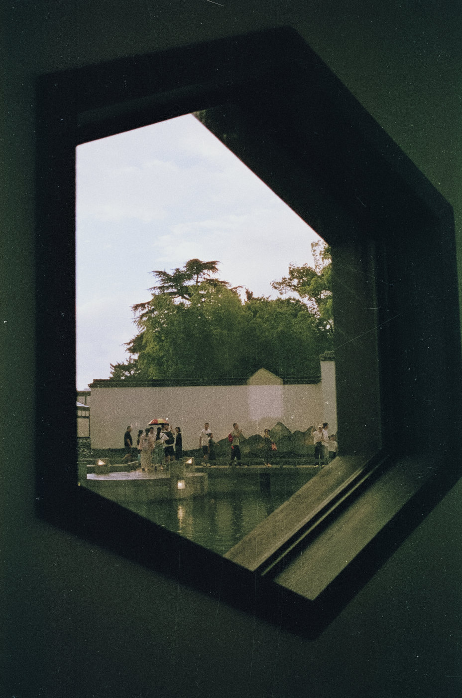

记录我的胶片翻拍系统
胶片数码化，未必只能依赖传统扫描仪。记录一套由数码相机、微距镜头、翻拍架、光源和底片夹组成的胶片翻拍系统，以及它带给我的新思路。
Personal Archive
这里保存一些照片、文字、器材折腾，以及我对日常生活的观察。摄影是入口，文字是线索，最后留下来的大概是一个人的观看方式。

胶片数码化，未必只能依赖传统扫描仪。记录一套由数码相机、微距镜头、翻拍架、光源和底片夹组成的胶片翻拍系统，以及它带给我的新思路。

傍晚走进上海青浦的金泽古镇，在古桥、窄巷与临河民居之间，记录一座水乡小镇日常而安静的面貌。

八月底的荡口古镇，游人稀少，沿河的夹竹桃却开得正盛。趁着古镇难得的清静，我带着相机慢慢走过河岸、旧屋与小巷，记录这段被繁花点亮的时光。

用佳能 EOS 50 和柯达金200胶卷，记录芦墟古镇的街巷、日常与旧建筑。

我最喜欢用柯达胶卷拍摄彩色照片。多年积攒的底片里，有一大半来自柯达；每次翻看，它们总会带我回到那些美好的记忆里。数码摄影浪潮之中，我对胶片的热爱仍在心底，而胶卷，我似乎还没玩够。
A personal archive of photographs, notes and curiosities.